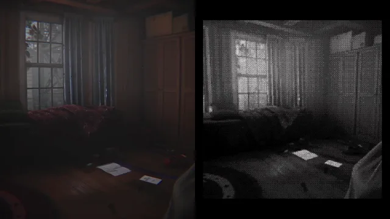
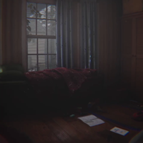
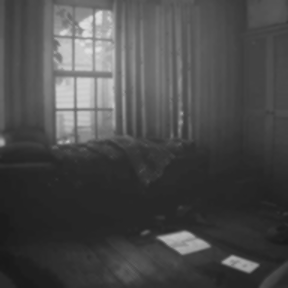
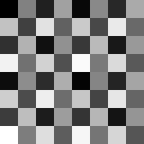
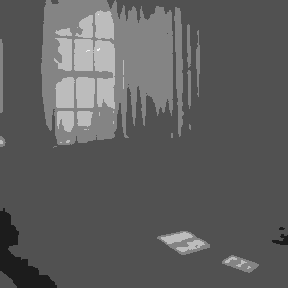
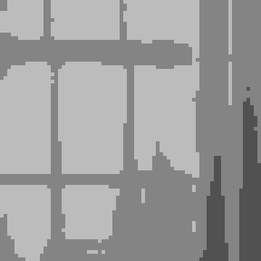
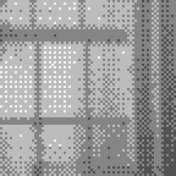

The goal
You carry a Game Boy with a camera and take photos with it throughout the game. I wanted the viewfinder and photos to look like they actually came out of one: tiny, low-res, a few shades of grey, with that dithered look.
It also had to work with the game's lighting. Dark rooms shouldn't go fully black, and bright windows shouldn't blow everything out to white.
How it works
The Game Boy has its own camera that renders into a small 288 by 288 texture. Right after it renders, a shader rewrites that texture: it draws into a temporary texture and copies the result back. The viewfinder and the saved photos both use the same texture, so they both get the look for free.
1. Tone
The camera's anti-aliasing and post-processing are off, so the image is first softened with a small 5-sample blur. Otherwise jagged edges turn into speckle once it's dithered. Colour is then reduced to brightness with the standard luminance weights.
Anything brighter than white, such as lamps and windows, is compressed so it can't flood the frame. Exposure is automatic: a 16 by 16 copy of the frame is averaged, with bright samples capped so one window can't darken the whole room, and exposure rises in dark scenes and falls in bright ones, between 0.5 and 3 times. That is what keeps dark rooms from going black. Finally a soft shoulder eases the top end towards white instead of clipping.


2. Dither
If you just round to five shades you get ugly bands. So before rounding, each pixel gets compared against an 8 by 8 Bayer pattern. Pixels next to each other get different thresholds, so in-between shades turn into a pattern of two shades, which your eye reads as a smooth gradient. The pattern is fixed to the pixel grid, so the live viewfinder doesn't shimmer from frame to frame.

float bayer = (BAYER[(px.y & 7u) * 8u + (px.x & 7u)] + 0.5) / 64.0;
float q = saturate(floor(lum * 4.0 + bayer) / 4.0);Adding a threshold between 0 and 1 before rounding down means that, in each 8 by 8 block, the share of pixels that round up equals how far the brightness sits between two shades.



3. Palette
The five shades map to five colours on the material, so the look can be tuned without touching code. The palette can also be swapped at runtime, on a copy, so the original material stays as is.
The step images were rendered at 288 by 288 with a Python port of the shader. The clip at the top is straight from the game.